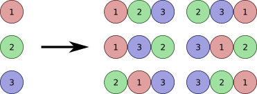
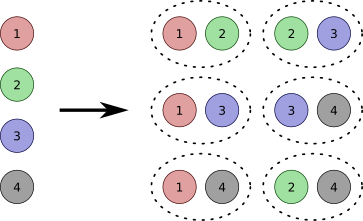

Backtracking, Permutation, Combination, Subset
Backtracking is a problem-solving technique used to solve problems that involve making choices. It's essentially similar to DFS (Depth-First Search) as it explores all possible decisions in the recursion tree. However, unlike DFS, it can terminate a decision path and then undo the previous choice (backtrack).
Sudo code
func Search(decisions) {
If there is decisions left to make:
for each available choice C for this decision:
Choose C.
Seach the remaining decisions that could follow C.
Un-choose C.
}All Subsets | O(2n)
Given an array nums, generate all subsets of nums.
// [1,2] -> [], [1], [2], [1,2]
func subsets(nums []int) [][]int {
ans := [][]int{}
//m := map[int]bool{}
subsets_helper(&ans, nums, []int{})
return ans
}
func subsets_helper(ans *[][]int, remain, current []int) {
if len(remain) == 0 {
*ans = append(*ans, append([]int{}, current...))
return
}
current = append(current, remain[0])
subsets_helper(ans, remain[1:], current)
current = current[:len(current)-1]
subsets_helper(ans, remain[1:], current)
}Permutation | O(n!)
Permutation of 3 elements.
func permute(nums []int) [][]int {
ans := [][]int{}
m := map[int]bool{}
permute_helper(&ans, nums, []int{}, m)
return ans
}
func permute_helper(ans *[][]int, remain, current []int, chosen map[int]bool) {
if len(current) == len(remain) {
*ans = append(*ans, append([]int{}, current...))
return
}
for i := range remain {
if !chosen[remain[i]] {
current = append(current, remain[i])
chosen[remain[i]] = true
permute_helper(ans, remain, current, chosen)
current = current[:len(current)-1]
chosen[remain[i]] = false
}
}
}Combination | O(C(n*k))
Combination of 2 elements from a set of 4.
func combine(nums []int, k int) [][]int {
ans := [][]int{}
combine_helper(&ans, nums, []int{}, k, 0)
return ans
}
func combine_helper(ans *[][]int, remain, current []int, k int, index int) {
if len(current) == k {
*ans = append(*ans, append([]int{}, current...))
} else {
for i := index; i < len(remain); i++ {
current = append(current, remain[i])
combine_helper(ans, remain, current, k, i+1)
current = current[:len(current)-1]
}
}
}